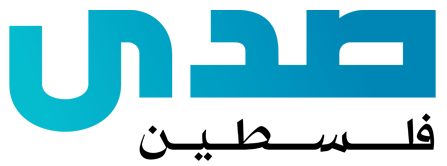
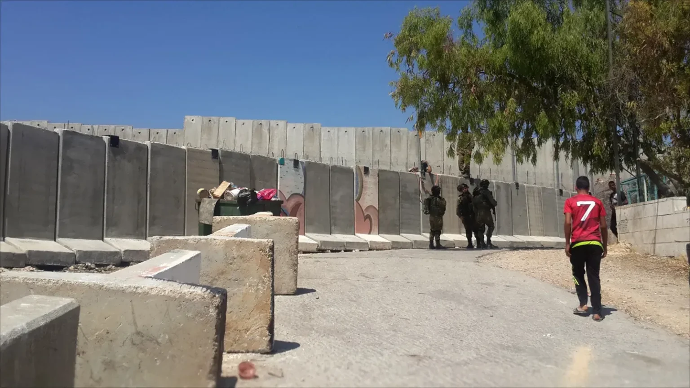
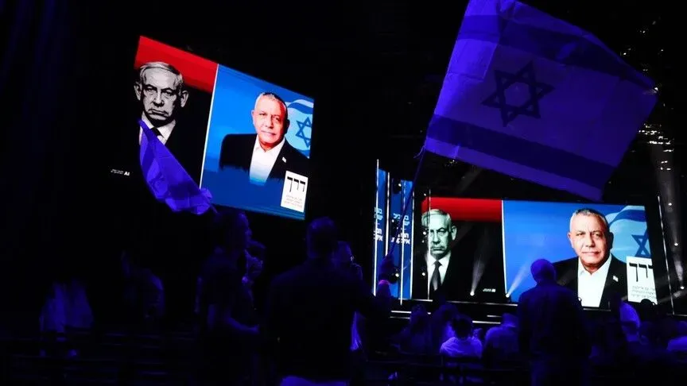

قطاع غزة
ضحايا جدد وسط قصف متواصل وتحذيرات من انتشار التهاب السحايا
أبرز تطورات اليوم في القطاع، مع تحذيرات طبية من انتشار المرض بين النازحين في مراكز الإيواء.
٢٢ نوفمبر ٢٠٢٦ · ٤ دقائق قراءةهوية مبنية من ثلاثة أشياء موجودة أصلًا في الشعار: الشريط، والزاوية، والصدى.
ما وجدناه في الموقع والصفحة، وما بُنيت عليه الهوية.
صدى فلسطين منصة مستقلة يتابعها نحو نصف مليون على فيسبوك، وتنشر على مدار الساعة عن الضفة والقدس والداخل وغزة. المحتوى قوي وحاضر. الشكل الحالي لا يقول شيئًا عنه.
الموقع اليوم قالب جاهز: أزرق افتراضي، خط النظام، ثلاث بطاقات متساوية، وكل خبر تحت تصنيف واحد اسمه «الأخبار». لو أخفيت الشعار لن تعرف موقع من هذا.
#046BD2 في الموقع، وفيروزي الشعار في مكان آخر. لا علاقة بينهما.الخبر صوت. وصداه يصل.
الاسم نفسه هو الفكرة. الصدى صوت يخرج من مكان ويُسمع في مكان أبعد، وهذا ما تفعله المنصة: خبر من حوارة أو خان يونس يصل إلى من لا يراهما. كل ما في الهوية يخرج من هذه الحركة، ومن شكل الشعار الحالي الذي يحملها دون أن يُستعمل.
حروف «صدى» شريط واحد بسُمك ثابت. هذا السُمك يصير وحدة القياس: الفواصل، علامات التصنيف، حواف البطاقات، والأيقونات.
الشريط ينعطف بزاوية واحدة مستديرة والباقي حادّ. كل صورة وكل لوحة في الموقع تحمل الزاوية نفسها في المكان نفسه: أعلى بداية السطر.
الشكل يتكرر إلى الخارج ويخفت. يظهر حول الصورة الرئيسية، وفي نبض الخبر العاجل، وفي شاشة التحميل. لا يُستعمل للزينة في أي مكان آخر.
نفس الشعار الذي يعرفه الجمهور، بعد إعادة رسمه وتنظيفه.
لم نغيّر شكل الكلمة. نصف مليون متابع يعرفونها، وتغييرها خسارة بلا مقابل. ما تغيّر: الشعار صار متجهات تُكبَّر بلا حدّ، والتدرّج اللوني القديم صار لونًا واحدًا ثابتًا يُطبع ويُعرض كما هو، وأضفنا رمزًا مربعًا للأماكن الصغيرة.

«ش» هو سُمك الشريط. كل قياس في الهوية من مضاعفاته: المسافة الآمنة حول الشعار ١ش من كل جهة، ونصف قطر الزاوية المستديرة يساوي ١٫١ش.
عين حرف الصاد ومعها قوسان يخرجان من زاويتها المستديرة. يُستعمل حيث لا تُقرأ الكلمة: أيقونة المتصفح، صورة الحساب، العلامة المائية على الصور والفيديو.
أبيض وحبر وفيروزي واحد. الألوان الأخرى لها وظيفة محددة.
#FFFFFFالخلفية#EEF3F4اللوحات#0D1B1Eالنص والعناوين#0FA3BCالشعار والأشكال#0A6C80الروابط والتصنيف#0A3A46الترويسة والتذييلالنسب على الصفحة: أبيض ورمادي فاتح ٧٠٪، حبر ١٨٪، فيروزي ١٠٪، أحمر العاجل ٢٪ فقط.
أربع مناطق، لكل واحدة لون مأخوذ من أرضها ورمز مرسوم بالشريط نفسه. اللون يظهر في علامة التصنيف وخط أعلى القسم فقط، ولا يلوّن الخلفيات.
زيتوني #5E6B2E
الرمز: سناسل التلال
ذهبي الحجر #8A6417
الرمز: القبة
أزرق الساحل #2F4FA0
الرمز: خط الشاطئ
فخّاري #A8442A
الرمز: المرفأ
| اللون | القيمة | على الأبيض | الاستعمال |
|---|---|---|---|
| حبر | #0D1B1E | 17.6 | كل النصوص |
| رمادي الحبر | #566468 | 6.1 | التاريخ والبيانات الثانوية |
| صدى للنص | #0A6C80 | 6.1 | الروابط، التصنيف العام |
| صدى | #0FA3BC | 3.0 | أشكال فقط، لا نصوص |
| عاجل | #C8102E | 5.9 | شريط العاجل والمباشر |
| زيتوني | #5E6B2E | 5.8 | الضفة |
| ذهبي الحجر | #8A6417 | 5.4 | القدس |
| أزرق الساحل | #2F4FA0 | 7.7 | الداخل |
| فخّاري | #A8442A | 6.0 | غزة |
كل لون يُستعمل للنص يتجاوز ٤٫٥ إلى ١ على الأبيض وعلى الرمادي الفاتح. الوضع الليلي: الخلفية #0B1518، النص #F2F6F6، والفيروزي يفتح إلى #3CC4D9.
كوفي للعنوان ونسخ للقراءة، كما في الشعار نفسه.
الشعار يجمع كلمة كوفية هندسية «صدى» مع كلمة نسخية «فلسطين». نظام الخطوط يكرر الاقتران نفسه. اختيرت الخطوط بعد مقارنة اثني عشر خطًا على عناوين حقيقية من الموقع.
الاحتلال يهدم قرية سمرة ويترك أطفالها في العراء
اقتحامات متواصلة للأقصى وتحذيرات من اعتداءات جديدة
نفذت قوات الاحتلال عملية هدم واسعة في قرية سمرة، التي يعود تاريخ ولادة سكانها فيها إلى أكثر من خمسين عامًا. وتقع القرية ضمن المناطق المصنفة «ج»، حيث تتكرر حملات الهدم بحق السكان الفلسطينيين.
الضفة الغربيةقبل ٩ دقائق٢٣ نوفمبر ٢٠٢٦ · ١٧:١٢٤ دقائق قراءةتحرير: فريق صدى
الرئيسيةالضفةالقدسالداخلغزةتغطيات خاصةEnglish
| الدور | الخط | الحجم | الوزن | ارتفاع السطر |
|---|---|---|---|---|
| عنوان رئيسي | Alexandria | ٣٦ – ٥٦ | ٨٠٠ | ١٫٣ |
| عنوان قسم | Alexandria | ٢٨ – ٤٠ | ٨٠٠ | ١٫٣ |
| عنوان خبر | Alexandria | ١٨ – ٢٤ | ٧٠٠ | ١٫٥ |
| مقدمة | Noto Naskh Arabic | ٢٢ | ٥٠٠ | ١٫٧ |
| نص | Noto Naskh Arabic | ٢٠ | ٤٠٠ | ١٫٨٥ |
| بيانات وواجهة | Readex Pro | ١٣ – ١٥ | ٤٠٠ / ٦٠٠ | ١٫٦ |
لا تباعد بين الحروف في أي نص عربي. لا خط مائل. عرض سطر الخبر لا يتجاوز ٦٢ حرفًا. الكلمات اللاتينية والأرقام داخل الجملة العربية تُعزل حتى لا ينقلب ترتيبها.
إطار، وثلاثة أنماط، ومجموعة أيقونات. كلها من الشريط والزاوية.

هذه بصمة الموقع. الصورة الرئيسية تحمل زاوية مستديرة واحدة، وخلفها خطّان يكرران الزاوية ويخفتان. تعرف أنك في صدى من هذا الشكل وحده.
يُستعمل مرة واحدة في الشاشة: مع الخبر الأول أو صورة التغطية الخاصة. باقي الصور تحمل الزاوية دون الصدى.
خط بسُمك ٢ على شبكة ٢٤، أطراف مقطوعة، وزاوية مستديرة واحدة حيث يسمح الشكل. أسهم التنقل تنقلب مع اتجاه اللغة. أيقونات التشغيل والوقت والبحث لا تنقلب.
الشعار يُكتب من اليمين، ثم يخرج صداه.
شاشة الدخول. تظهر فقط إذا تأخر التحميل أكثر من ٤٠٠ ملّي ثانية، حتى لا تؤخر صفحة جاهزة.
المؤشر الصغير: داخل الأزرار وعند تحميل المزيد
هيكل البطاقة: يأخذ شكل المحتوى وزاويته
الصورة كما التُقطت، والخبر بلا صناديق.

عنوان فوق الصورة يجلس على ظل فيروزي عميق، لا أسودالأحمر لا يظهر في الموقع إلا هنا وفي علامة «مباشر». إذا لم يكن هناك عاجل يختفي الشريط كله.
أبرز تطورات اليوم في القطاع، مع تحذيرات طبية من انتشار المرض بين النازحين في مراكز الإيواء.
٢٢ نوفمبر ٢٠٢٦ · ٤ دقائق قراءةلا صندوق ولا ظل حول الخبر. خط الحبر فوقه يكفي. المربع الصغير قبل اسم المنطقة هو الشريط مقطوعًا، ولونه لون المنطقة. «خاص» يأخذ إطارًا بزاوية الهوية ليتميز عن المناطق.
خمس حركات فقط، ولكل واحدة سبب.
الصورة تنكشف من جهة بداية السطر، كما تُقرأ العربية. تقول للعين أين تبدأ. 520ms
العنوان يصعد سطرًا بعد سطر بفارق ٧٠ ملّي ثانية. بالسطر لا بالحرف، لأن تقطيع الحروف يكسر اتصال الكتابة العربية.
فاصل القسم يُرسم من اليمين عند الوصول إليه. يعلن بداية قسم جديد دون عنوان متحرك. 900ms
نبضتان تخرجان وتخفتان. للعاجل والمباشر فقط، لأن النبض المستمر يشدّ العين، ولا يستحق ذلك إلا ما يحدث الآن. 1400ms
الزر ينكمش ٣٪ عند الضغط ويعود. تأكيد فوري أن اللمسة وصلت. 120ms
cubic-bezier(.16, 1, .3, 1).